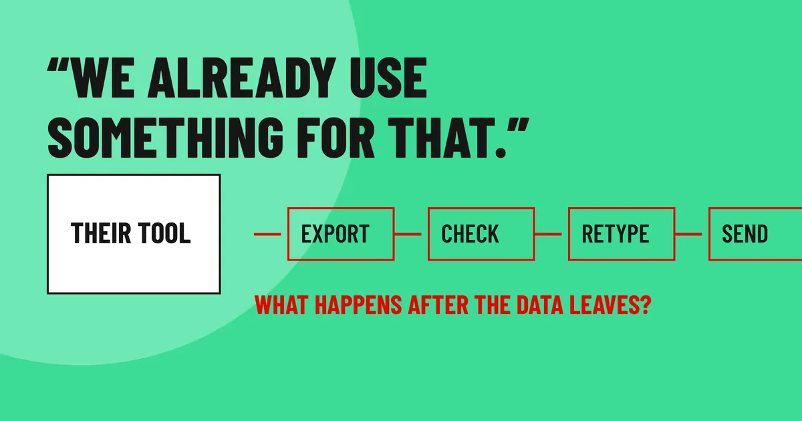

Writings · LinkedIn
We already use something for that.
Do not compare features. Ask what happens after the data leaves that system.

"We already use something for that."
You hear it on most first calls. The buyer already owns a tool that does part of what yours does, and they tell you so.
The natural reply is to start comparing features. Ours does this, theirs does not. The buyer ends up defending a choice they already made, and the meeting ends with nothing to come back for.
I answer it with one question: "Good. What happens after the data leaves that system?"
Every tool a company owns hands its output to a person. Someone exports it, checks it, retypes part of it into a spreadsheet, and sends it on to someone who asks a question the tool cannot answer.
The hours go there, in the stretch between the tool they bought and the result their boss needs. Most people stopped noticing that stretch long ago, so they will not bring it up unless you ask.
Then keep going:
Who picks it up from there?
How long does that take in a normal week?
What happened the last time it went wrong?
Write the answers down in their words. Now you have a problem they described, a cost they can feel, and a reason to meet again. That is when a first meeting starts to become a sales call.
You also never had to say a bad word about the tool they chose. Some people there do good work. You are there for the part their tool leaves behind.
This week, look at the last three calls where you heard "we already use something." Write down what happens after the data leaves that system. Any blank is the first question for your next call.
More of the lines you hear on a first call, and how I handle them: what you hear on the first call.
Common questions
What should I say when a buyer tells me they already use a tool for that?
"Good. What happens after the data leaves that system?"
Why not just show how our features compare?
The buyer ends up defending a choice they already made, and the meeting ends with nothing to come back for.
What should I ask after that first question?
Who picks it up from there, how long that takes in a normal week, and what happened the last time it went wrong.
Where is the opening if they already own a tool?
In the stretch between the tool they bought and the result their boss needs. Someone exports, checks and retypes the output, and most people stopped noticing that work long ago.
Do I have to criticize the tool they chose?
No. You're there for the part their tool leaves behind.